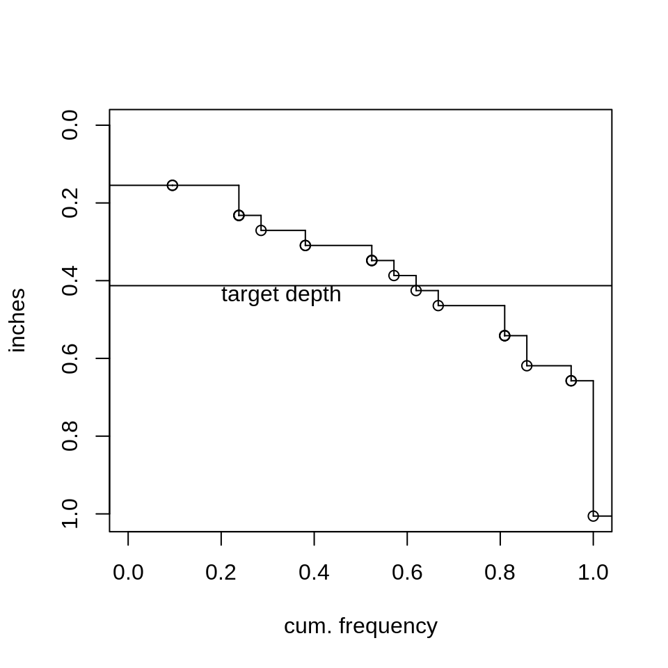

Introduction
Sprinkler irrigation systems in landscape applications typically use pop-up spray, rotor, or rotator (modified pop-up type) sprinklers. Historically, impact-type sprinklers have also been used but have fallen out of use. The following audit of a turf sprinkler (rotors) system is provided as an example of evaluation sprinkler systems in a landscape application. This audit was performed after an initial audit and adjustment of the system that attempted to reduce the sprinkler application rates at “hot spots”yet maintain reasonable application uniformity. The adjustment included re-nozzling and arc adjustment.
The system comprises two zones and was not designed and installed in “textbook” fashion and as such may be a better indication of many existing systems that need evaluation for possible modification. Zone 1 has 1 rotor (Rain Bird R50 “turf bird” with a 3 gpm nozzle) while zone 3 has 3 rotors (1- rain bird 42 sa with a 2 gpm nozzle and and 1-UCR-1 turf-Bird equivalent with a 2 gpm nozzle and 1- Rain Bird turf-bird with a 3 gpm nozzle). Zone 1 operates at high pressure due to high pressure at the manifold and only 1 rotor in the zone. The “turf bird” rotors do have stator-adjustable bypass mechanisms that can be manually adjusted to bypass flow to the drive mechanism according to nozzle size (lesser flow bypassed with increasing nozzle size, or more flow bypassed with decreasing nozzle size) so that the rotation speed of the rotor will remain at a relatively constant rotation speed regardless of nozzle size. None of the rotors are positioned at the edge of the irrigated area, and all are operated as part-circle sprinklers in an attempt to obtain acceptable uniformity.
Procedure
Catch cans were set in a 9 ft by 9 ft grid over the turf area, except for an turf area not irrigated near a shaded area. The catch cans are 27 mm diameter at the top. Neither static or operating pressure was measured. Both zones were run for 15 minutes in sequence, and catch can volumes were recorded. The raw data set is shown below. “NA” data are “phantom” cans outside the irrigated area that were introduced to generate a rectangular grid of catch cans that then allowed an x,y location grid to be generated using interp::interp.
raw.data<-catchcan$landscape #import data from catchcan.rda
raw.data.in<-raw.data/((7.2/2)^2*pi)/2.54 #ml (cc) to cm depth and divide by 2.54 cm/in.
#need to convert matrix to vector for na.exclude, otherwise entire row with any NAs will be excluded
eff<-eff(na.exclude(as.vector(raw.data.in)),mean(raw.data.in,na.rm=TRUE)) # compute eff and adeq.
eff.out<-eff$appeff # extract for later use
adeq.out<-eff$appadeq # extract for later use
knitr::kable(raw.data,format="pipe",caption="Raw catch can data matrix, mls. 'NA' are phantom cans.")| c1 | c2 | c3 | c4 | c5 | c6 | c7 | |
|---|---|---|---|---|---|---|---|
| r1 | NA | 9 | 11 | 11 | NA | NA | NA |
| r2 | NA | 13 | 17 | 14 | 15 | 15 | NA |
| r3 | 3 | 15 | 13 | 6 | 14 | 11 | NA |
| r4 | 7 | 11 | 14 | 17 | 9 | 6 | 4 |
| r5 | 8 | 9 | 12 | 26 | 17 | 8 | 4 |
| r6 | 6 | 10 | 14 | 16 | 14 | 9 | 6 |
| r7 | NA | 7 | 10 | 6 | 16 | 11 | 3 |
| r8 | NA | NA | NA | NA | 16 | 10 | 2 |
| r9 | NA | NA | NA | NA | 5 | 11 | NA |
Results and Interpretation
Graphical and numeric measures were used to evaluate uniformity and efficiency of the system. For plotting results, a 9 x 9 ft grid was constructed and raw data was assigned to the grid:
# create a x,y location grid from fields::
# catch can spacing is 6 ft x 6 ft
x<-seq(-27,27,9)
y<-seq(75,3,-9) # order - start at top (r1)
grd<-list(x,y)
grid<-fields::make.surface.grid(grd)
plot(grid, ylim=c(0,80),xlim=c(-30,30),xlab="ft",ylab="ft")
labels<-matrix(t(raw.data),ncol=1)
text(grid[ ,1],grid[ ,2]+3,labels,cex=0.7)
arrows(20,68,21.5,71,lw=3,length=0.1) #draw north arrow
text(23,75,"N",srt=-25) # north arrowCatch data with cans at 6 x 6 ft spacing.
The raw volume data is plotted as a densigram with contours below, and sprinkler locations are added. Note that NAs have been converted to 0. This is necessary because the intrep::interp function called from within the spreval::plotss function does not allow NA (missing) values.
labels[is.na(labels)]<-0 # interp will not accept missing values - set to 0
can.data<-cbind(grid[ ,1],grid[ ,2],labels) # prep for ssplot function
spr.x<-c(0,8,-11,0);spr.y<-c(18,39,48,60) # sprinkler locations bottom to top in plan
spr.loc<-cbind(spr.x,spr.y)
plotss(can.data,spr.loc,spklab=c("1","2","3","4"),ylab="ft", xlab="ft")
#> [1] -31.32 31.32 -5.64 79.32Catch data as densigram. ‘Hotter’ colors are greater collected depths. Black dots with bold italic labels are sprinkler locations and numbers
Finally, data are converted to application rates, and part circle arcs are drawn as shown below. Note that the aspect ratio is set to 1.0 (asp=1) for true x/y scaling and non-skewed sprinkler arcs.
#now plot application rates
inches<-labels/((7.2/2)^2*pi)/2.54 #ml (cc) to cm depth and divide by 2.54 cm/in.
in.hr<-inches*4 # 15 minute run time in audit, i.e., both zones ran 15 minutes
in.hr.data<-cbind(grid[ ,1],grid[ ,2],round(in.hr,2))
# plot(in.hr.data). send plot to object for recall of par("usr")
# set asp=1 for true scale plot and non-skewed sprinkler wetted radius arcs
main.plot<-plotss(in.hr.data,spr.loc,spklab=c("1","2","3","4"),xlab="ft", ylab="ft",asp=1)
#reset to user coordinates used in plotss for subsequent low level plot drawing (arcs,lines)
par(usr=main.plot) # use this to reset par("usr") for low level plots (arc and lines)
cz1<-1;cz2<-1 # color for zone 1 and 2 arcs
#sprinkler 1
draw.arc(x=spr.x[1],y=spr.y[1],radius=27,deg1=-40,deg2=185,col=cz1,lwd=1.5)
draw.radial.line(0,27,center=c(spr.x[1],spr.y[1]),deg=-40,col=cz1,lwd=1.5)
draw.radial.line(0,27,center=c(spr.x[1],spr.y[1]),deg=185,col=cz1,lwd=1.5)
#sprinkler 2
draw.arc(x=spr.x[2],y=spr.y[2],radius=23,deg1=-20,deg2=175,col=cz2,lwd=1.5,lty=2)
draw.radial.line(0,23,center=c(spr.x[2],spr.y[2]),deg=-20,col=cz2,lwd=1.5,lty=2)
draw.radial.line(0,23,center=c(spr.x[2],spr.y[2]),deg=175,col=cz2,lwd=1.5,lty=2)
#sprinkler 3
draw.arc(x=spr.x[3],y=spr.y[3],radius=20,deg1=-5,deg2=220,col=cz2,lwd=1.5,lty=2)
draw.radial.line(0,20,center=c(spr.x[3],spr.y[3]),deg=-5,col=cz2,lwd=1.5,lty=2)
draw.radial.line(0,20,center=c(spr.x[3],spr.y[3]),deg=220,col=cz2,lwd=1.5,lty=2)
#sprinkler 4
draw.arc(x=spr.x[4],y=spr.y[4],radius=21,deg1=-20,deg2=195,col=cz2,lwd=1.5,lty=2)
draw.radial.line(0,22,center=c(spr.x[4],spr.y[4]),deg=-20,col=cz2,lwd=1.5,lty=2)
draw.radial.line(0,22,center=c(spr.x[4],spr.y[4]),deg=195,col=cz2,lwd=1.5,lty=2)Catch rates (in/hr). Graphics parameter asp=1 for true x/y scaling.
Standard uniformity and efficiency values are shown in the table below:
#determine CU,DU.lh, and DU (low quarter) based on catch rates
in.hr.actual<-in.hr[in.hr>0] # do not use "0" data as that was done for interp::interp
in.hr.avg<-mean(in.hr.actual) # compute average catch rate for late use (AELQ)
uni<-c(CU(in.hr.actual),DU.lh(in.hr.actual),DU(in.hr.actual))
table<-round(uni,0)
knitr::kable(t(table),col.names=c("CU","DU.lh","DU"))#transpose array (table) for display| CU | DU.lh | DU |
|---|---|---|
| 64 | 64 | 45 |
PELQ, the potential efficiency of the low quarter, would be equal to DU in this case because the application rate (from the nozzles) was not measured, and therefore the evaporation and drift losses are unknown. We can evaluate AELQ (application efficiency of low quarter) under different SMD (soil moisture deficit) and irrigation run times to provide a sense of efficiency under different operation. In this case, we can only use caught depths, not applied depths, as we did not measure the sprinkler discharge, and AELQ will be equal to PELQ unless the average caught low quarter depth (catch rate x duration x DU) is greater than the SMD. The table below has entries for average low quarter catches (rates x duration) greater than the indicated SMD, in which case AELQ = SMD/avg. catch. Otherwise, AELQ will be equal to PELQ (also DU in this case), and the entry is NA. Note that AELQ is always less than PELQ.
aelq.table<-array(1:20,dim=c(5,4))
dur=c(60,90,120,150,180) # set first duration
catch<-array(length(dur))
smd=c(0.2,0.3,0.4,0.5) # set first SMD
for (i in 1:5){
catch[i]<-dur[i]/60*in.hr.avg
for(j in 1:4){
if(catch[i]*(uni[3]/100)>=smd[j]){aelq.table[i,j]<-smd[j]/catch[i]}#mult. catch by DU so AELQ doesn't exceed PELQ (DU)
else{aelq.table[i,j]<-NA}
}
}
aelq.table<-round(aelq.table,2)*100 # round and convert to percent
dimnames(aelq.table)[[1]]<-as.character(dur)
knitr::kable(aelq.table,row.names=TRUE,col.names=as.character(smd),caption= "AELQ by duration (min, rows) and SMD (in., columns). NA for caught depths less than SMD.") | 0.2 | 0.3 | 0.4 | 0.5 | |
|---|---|---|---|---|
| 60 | NA | NA | NA | NA |
| 90 | 32 | NA | NA | NA |
| 120 | 24 | 36 | NA | NA |
| 150 | 19 | 29 | 39 | NA |
| 180 | 16 | 24 | 32 | 40 |
Using a definition of water stored in the root zone divided by the water applied, we can use spreval::eff to compute efficiency by integrating the area of catch depths less or equal than the SMD (or target) and dividing by the total integrated catch depth area. Integration by area assumes each catch can represents an equal area. Adequacy is defined as 1 - the area under the distribution (density) curve receiving less than the target (deficit area) divided by the target depth over the whole irrigation area. Using the average catch depth in the audit as a target, the efficiency is 81% and the adequacy is 81%. This can be seen graphically in the figure below that uses a target depth of the average audit catch rate (in./hr) for a 1 hour irrigation, or 0.41 in. The similar values of efficiency and adequacy in this case is due to using a target depth equal to the average catch, and areas between the curve and the target depth being similar.
sfplot(as.vector(na.exclude(raw.data.in)*4), mean(raw.data.in,na.rm=TRUE)*4,ylab="inches",main=NULL)# convert to in/hr for 1 hour irr.
As target depth decreases relative to the mean applied depth efficiency decreases and adequacy increases (and vice-versa). This can be seen in the table below.
effad.table<-array(1:10,dim=c(2,5))
target=c(0.2,0.3,0.4,0.5,0.6) # target depths
for (j in 1:5){
entry<-eff(as.vector(na.exclude(raw.data.in*4)),target[j])
effad.table[1,j]<-entry$appeff
effad.table[2,j]<-entry$appadeq
}
effad.table<-round(effad.table,2)*100 # round and convert to percent
dimnames(effad.table)[[1]]<-c("efficiency","adequacy")
knitr::kable(effad.table,row.names=TRUE,col.names=as.character(target),caption= "Efficiency and
Adequacy for a 1 hour duration irrigation, by target depth, in. (columns)") | 0.2 | 0.3 | 0.4 | 0.5 | 0.6 | |
|---|---|---|---|---|---|
| efficiency | 45 | 63 | 77 | 86 | 92 |
| adequacy | 94 | 88 | 80 | 72 | 64 |
Summary and Conclusions
Uniformity decreased after nozzle modification of sprinklers 2 and 3, and sprinkler replacement and arc modification of sprinkler 1. Average application rate decreased and no runoff (observed in first audit) occurred, although the run times had been decreased to 15 minutes both zones instead of 20 as in the first audit. The efficiency and adequacy of the modified sprinklers was nearly identical to that of the first audit. This illustrates the difficulty of improving or maintaining uniformity and efficiency while also attempting to alter application rates, in this instance, reducing application rate to reduce runoff. It is even more difficult when modifying a system with poor sprinkler layout.